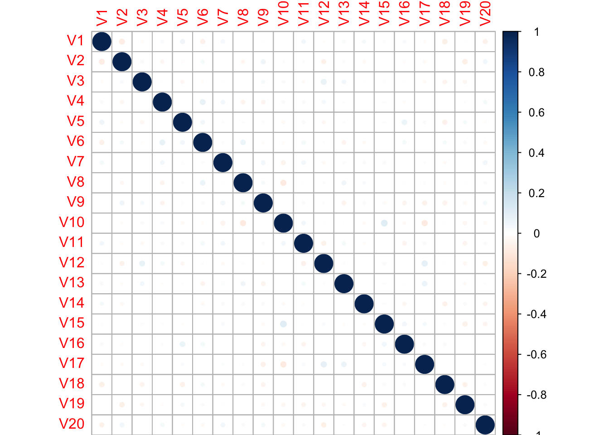
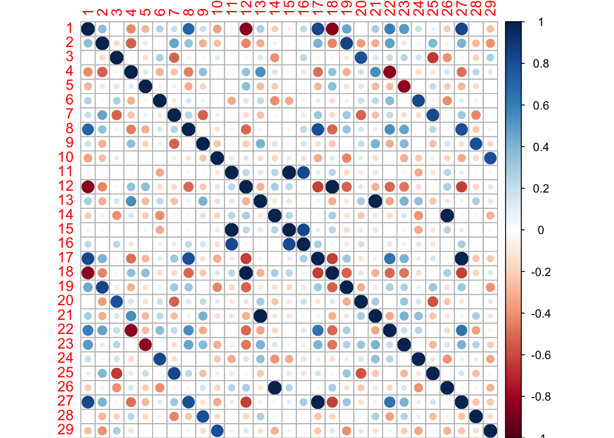

Exploring correlations of random numbers
When working with big data you need to be more aware of statistical outliers than you do with more typical data sizes. Basic statistical tests like a Student’s t-test or Pearson correlation are acceptable when you only test a few relationships in a small data set. But when you examine the correlation with thousands of columns of data, you are bound to find several that are strongly correlated. It’s always good to have an idea for the ‘expect’ value. How many correlations should I expect to see with this R value or better given the size of my data set.
To explore this idea, we can take a look at a random set of features produced by Random.org. These data are organized into a 1000x20 table (1000 rows and 20 columns). We can create a correlation matrix and view the plot of Pearson’s correlation for each pairing of the 20 columns.
randata <- read.csv("Random\ data\ v2.csv", header = FALSE)
library(corrplot)
randcorr <- cor(randata)
corrplot(randcorr, method = "circle")
With 20 features and 1000 observations for each feature we don’t see many features that have a high correlation. The highest correlation value, in either positive or negative direction is:
randcorr[randcorr == 1] <- 0
max(abs(randcorr))## [1] 0.1041321The correlation of 0.104 is a very low value, suggesting that there little to no relationship between our features. What happens when we transpose the data frame to have 1000 features with only 20 observations? Let’s look for strong correlations, with an R > 0.8.
trandata <- t(randata)
trandcorr <- cor(trandata)
trandcorr[trandcorr == 1] <- 0
high_corr <- trandcorr > 0.8
set.seed(5)
library(caret)## Loading required package: lattice## Loading required package: ggplot2highlyCorrelated <- findCorrelation(trandcorr, cutoff = 0.8, verbose = TRUE)##
## Combination row 177 and column 407 is above the cut-off, value = 0.827
## Flagging column 177
## Combination row 48 and column 450 is above the cut-off, value = 0.83
## Flagging column 450
## Combination row 266 and column 450 is above the cut-off, value = -0.851
## Flagging column 266
## Combination row 178 and column 534 is above the cut-off, value = 0.843
## Flagging column 534
## Combination row 439 and column 565 is above the cut-off, value = 0.805
## Flagging column 565
## Combination row 65 and column 612 is above the cut-off, value = -0.804
## Flagging column 65
## Combination row 92 and column 713 is above the cut-off, value = -0.849
## Flagging column 713
## Combination row 380 and column 725 is above the cut-off, value = -0.837
## Flagging column 725
## Combination row 589 and column 791 is above the cut-off, value = 0.83
## Flagging column 791
## Combination row 759 and column 867 is above the cut-off, value = 0.839
## Flagging column 867
## Combination row 134 and column 873 is above the cut-off, value = 0.802
## Flagging column 134
## Combination row 48 and column 887 is above the cut-off, value = 0.81
## Flagging column 887
## Combination row 197 and column 908 is above the cut-off, value = 0.81
## Flagging column 908
## Combination row 80 and column 992 is above the cut-off, value = 0.804
## Flagging column 992length(highlyCorrelated)## [1] 14There are 14 pairs of columns that have a Pearson’s correlation above 0.8 in this data set.
I am not sure how to extract all of the highly correlated columns programatically, the findCorrelation function will only report one of the two highly correlated columns since it is used to remove columns in a dataset that are correlated and therefore redundant. In this case I want to extract just those pairs of columns, so I create the list of missing columns by hand below. Then we can plot the correlations of the columns with correlations above 0.8.
hc <- c(177,407,48,266,178,439,65,92,380,589,759,134,48,197,80)
highlyCorrelated <- c(highlyCorrelated, hc)
trandata_high <- cor(trandata[,highlyCorrelated])
corrplot(trandata_high, method = "circle")
And knowing is half the battle!
Here we can see several strong correlations between these columns. Strong positive correlations are dark blue and strong negative correlations are dark red. This Monte Carlo simulation shows how easy it is to find very strong correlations in a wide and shallow data set even from completely random numbers.